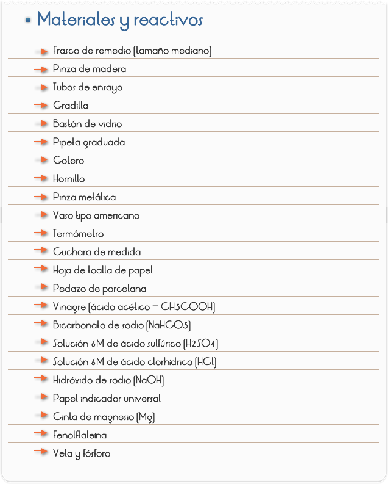

Introducción
Objetivo
Analizar tipos de reacciones químicas.

Procedimientos
.PARTE I: REACCIÓN CON DESPRENDIMIENTO DE CO2 (GÁS CARBÓNICO)
1)
2)
3)
4)
PARTE II: REACCIONES EXOTÉRMICAS Y ENDOTÉRMICAS
II.1: Reacción Exotérmica
1)
2)
3)
II.2: Reacciones Endotérmicas.